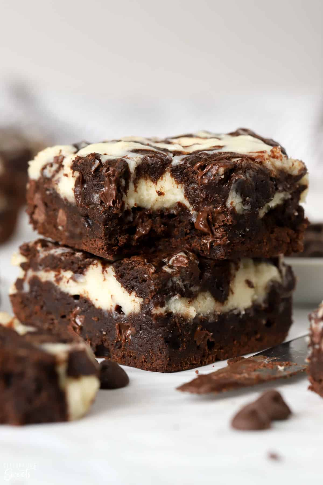

Cream Cheese Brownies

Description
Cream Cheese Brownies! Perfect for any occasion.
Guaranteed to satisfy your sweet tooth.
Servings: 20 servings
Ingredients
Brownie Batter
- 12 tablespoons unsalted butter
- 1/2 cup semisweet chocolate chips
- 1/2 cup natural cocoa powder
- 1 cup white sugar
- 1/2 cup brown sugar
- 2 large eggs + 1 egg yolk
- 1 tsp vanilla extract
- 1/2 tsp salt
- 1 cup all-purpose flour
Cheesecake Batter
- 8oz cream cheese (room temperature)
- 1/4 cup sugar
- 1 large egg
- 1/2 tsp vanilla extract
Directions
- Preheat oven to 350 degrees Fahrenheit and
spray a 7x11 pan with baking spray
- Combine butter and chocolate chips in a large bowl
- Microwave for 30 seconds. Stir well and microwave again
for another 15 seconds. Repeat until chocolate and butter
are completely melted and well combined
- Add cocoa powder and stir
- Add sugars, stir until completely combined
- Add eggs and then egg yolk, one at a time. Stirring well after each one
- Add vanilla extract and salt. Stir to combine
- Add flour and stir until completely combined
- Spread 3/4 brownie batter in prepared pan
Cheesecake
- Combine cream cheese and sugar in a bowl
- Stir in egg and vanilla extract. Stir until well-combined
- Pour cheesecake over prepared bwonie batter
- Take remaing brownie batter and drop over cheesecake
- Use knife to swirl brownie batter and cheesecake
- Bake at 350 degrees Fahrenheit for 25-30 minutes, until centre is set and toothpick inserted comes out clean
- Let cool completely before cutting and serving
Nutritional Facts
Per Serving:
232 calories; 2g protein; 26g carbohydrates;
13g fat; 55mg cholesterol; 107mg sodium; 19g sugar